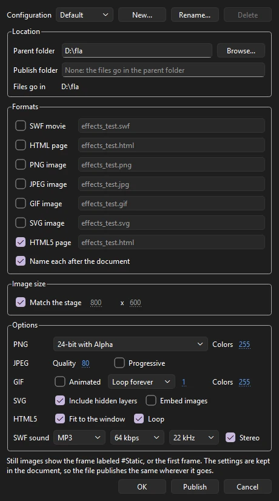
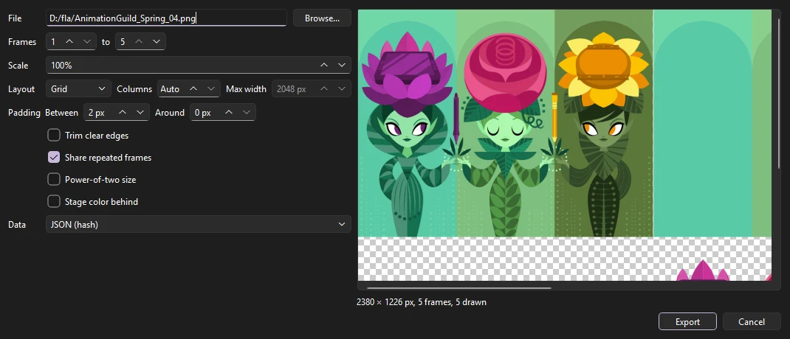
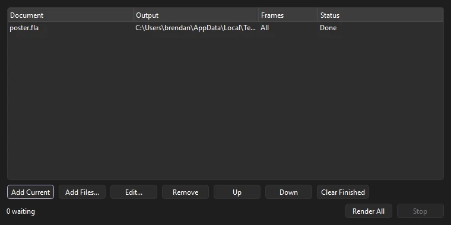

Output
Exporting
Exports render through the same drawing code as the stage, so what you see is what you get. All export commands are under .

Export Movie
Choose (Ctrl+Alt+Shift+S) to render a range of frames.

- Format
- What to make. See the table below.
- File
- Where to save it. Browse... picks a location.
- Size
- The output size in pixels. Keep proportions to match the stage's shape.
- Frames
- The first and last frame to export.
- Options
- Transparent background, Include sound, and Loop forever, where the format supports them. Include safe zones draws the safe zones and aspect-ratio frames over every frame, for a review copy. Through the camera renders the scene as its camera sees it; turn it off for the stage as drawn.
- Codec
- For video: H.264 (MP4) to watch and share; ProRes 422 HQ (MOV) for editing; ProRes 4444 with alpha (MOV), which keeps a transparent background, for compositing.
- Area
- Stage, or Everything: all the artwork on the frames, wherever it is, the pasteboard too. The size is then the stage's scale applied to that larger area.
- Colors
- For a GIF, how many colors each frame may use (2 to 256), and Dither to mix them so gradients stay smooth in few colors.
- Layers
- For a sequence per layer, which layers get one. All visible layers until you choose.
- Scenes
- In a document with more than one scene: This scene; All scenes, one after another into one file, the frame range being every frame of every scene; or Each scene to its own file, named after the file and the scene (
movie_Intro.mp4).
| Format | Produces |
|---|---|
| PNG Sequence | One numbered image per frame (name0001.png, name0002.png...), optionally with a transparent background. Ideal for compositing and editing software. |
| Video | With the H.264 codec, an MP4 (or a MOV if you name the file .mov) with the soundtrack mixed in as AAC audio: good quality, plays everywhere. With a ProRes codec, a MOV with the soundtrack as uncompressed PCM audio. |
| Animated GIF | A GIF, looping forever or playing once, with its own color palette for each frame. |
| PNG Sequence per Layer | A separate PNG sequence for every visible layer, with masks applied, for compositing layers separately. |
| Sound (WAV) | The mixed soundtrack on its own. |
| Compositing Passes (PNG), Multi-layer EXR | Line, color and matte passes for compositing. See Compositing passes. |
| SVG Sequence | One numbered SVG per frame, its shapes, strokes, gradients and text kept as vectors. Include hidden layers draws layers you have hidden; Link images writes each bitmap once as a file beside the SVGs (name_image_….png) rather than inside every frame. An adjustment layer works on pixels, so it and the layers under it go into each frame as one picture, at twice the size, with the layers above it as vectors. |
In every export, movie clips play their own animation, guide layers are left out, and locked layers are included. With on, movie clips follow the stop(), play() and goto calls in their frame scripts; see Frame scripts.
About ffmpeg
Phoenix encodes and reads video with ffmpeg, which comes with Phoenix: it is installed beside Phoenix itself, so video export and video import work with nothing else installed. Phoenix always uses its own copy, never another ffmpeg on the machine, so a movie comes out the same everywhere. ffmpeg is a separate program under the GNU General Public License; its license, and where to get the source it was built from, are in the licenses/ffmpeg folder of the installation (on macOS, inside Phoenix.app).
Export Image
renders a single frame.

- Format
- PNG, JPEG or GIF.
- Size
- Any size, with proportions kept if you like.
- Frame
- Which frame to render.
- Matte
- The background: the stage color, transparent (not for JPEG), or any color.
- Include safe zones
- Draws the safe zones and aspect-ratio frames over the picture, for a review copy.
- Quality
- For JPEG, from 0 to 100. The default is 90.
- PNG
- Full color, or 8-bit: a palette of at most 256 colors, a smaller file for flat-colored art. Transparency is kept.
- Colors
- For an 8-bit PNG or a GIF: how many colors the palette has, and Dither to mix them so gradients stay smooth.
Export to SVG
writes the current frame as an SVG file, which scales cleanly for print and the web. Hidden layers are left out and images are embedded. Masks are written as SVG clip paths, so masked art stays vector; a feathered mask is written as an SVG mask, its shape blurred, so the soft edge stays soft and the art stays vector too. Filters, which SVG cannot express the same way, are included as images, and blend modes draw as Normal.
SWF movies
writes the document as an SWF movie, for players and pipelines that read SWF. The movie keeps its structure, so its scripts find what they work with: the scenes play one after another; movie clips are clips with timelines of their own that play on their own; buttons keep their up, over, down and hit frames; instances keep their names, color effects, filters and blend modes; mask layers clip what they mask; frame labels are kept; and dynamic text with a name or a variable, and input text, are text fields scripts can set and read. Shapes, strokes, gradients, static text, bitmaps and graphic symbols go in as vector shapes and images, written once and placed again wherever they show, and tweens go in a frame at a time.
ActionScript 1 and 2 is compiled into the movie, so it runs in any player that plays SWF: frame scripts, on() handlers on buttons and movie clips, onClipEvent() handlers, #initclip, ActionScript 2 class files (found where Test Movie finds them) and the symbols linked to them, for attachMovie. A script that does not compile is left out and the export says why, with its scene or symbol, layer and frame.
ActionScript 3 is compiled into the movie too, as the bytecode players run, so the movie runs what Test Movie runs: the frame scripts of the main timeline (its scenes as one timeline) and of each movie clip, the document class, the classes symbols are linked to, and every class those use, found where Test Movie finds them (see Class files). Named instances are variables of the timeline they are on, unless the file's ActionScript settings turn off declaring stage instances; a symbol linked to a class with no file of its own gets a class made for it; a symbol with frame scripts linked to a class file of its own gets a class for its frames under that one. The fl.controls components the movie uses go in as Phoenix's own, with the parameters set in the Component Parameters, drawn with the skins in the library's Component Assets; a skin the library does not have is drawn in a plain look, and the export names it. If the ActionScript 3 does not compile, the movie goes out without it and the export says why: the class file and line, or the scene or symbol, layer, frame and line of the frame script.
Where Phoenix draws something a player cannot (effect layers, track mattes, adjustment layers, node graphs, behaviors and effects on instances, 3D, the multiplane camera, motion blur, soft or inverted masks), the scene goes out as frames of vector shapes instead, as Phoenix draws them, with what filters make as images and no scripts. Either way, stream sounds go in as a soundtrack streamed with the frames; the scene's event, start and stop sounds go in as sounds of their own, started and stopped on their frames, so they play to the end and loop as set; both compressed as Publish Settings say (see Exporting sound). From the command line, Phoenix render shot.fla --out shot.swf does the same, and prints what did not go in.
Publish
(Ctrl+Shift+F12) chooses what (Shift+F12) writes, beside the document: an SWF movie, an HTML page, an HTML5 page that plays the movie without the SWF (see HTML5 pages), and PNG, JPEG, GIF and SVG images, each named after the document or with a name of its own. Images take the stage's size or one of their own. PNG can be 24-bit with alpha (a clear background), 24-bit, or 8-bit with a number of colors; JPEG has a quality and can be progressive; GIF can be still or animated, looping forever, playing once or repeating a number of times, with a number of colors; SVG can include hidden layers and embed its images or write them beside it. SWF sound sets how the movie's sound is compressed: MP3, ADPCM, raw or none, with its quality, sample rate and channels.

Still images show the frame labeled #Static, or else the first frame. The HTML page shows the SWF movie, or else the first image published. The settings are kept in the FLA file's own publish settings, so a file that was set up to publish elsewhere publishes the same from Phoenix, and every setting Phoenix does not use is kept unchanged.
Browsers no longer play SWF movies themselves, so an HTML page with an SWF movie loads Ruffle, a free, open source SWF player that runs in the browser, from the web (a fixed release, from unpkg.com). Ruffle finds the movie on the page and plays it; viewers need nothing installed. Ruffle plays ActionScript 1 and 2 well; its ActionScript 3 support is still growing (an ActionScript 3 movie that draws into bitmaps needs a browser with WebGL 2 or WebGPU), so check a scripted ActionScript 3 movie in a browser before you share it. The page needs an internet connection to load Ruffle, and a page opened straight from your disk may not play: put it on a web server, or open it through a local one (for example python -m http.server in its folder). To show the movie with a player of your own, keep the SWF and leave the HTML page out.
HTML5 pages
The HTML5 page format publishes the movie as a web page that plays it with Phoenix's own JavaScript player, with no SWF and no plugin: the document's symbols, timelines and art drawn on a canvas in any current browser, sharp on high-density screens. It writes, beside the document:
- the page (named after the document, or
name_html5.htmlwhile the HTML page format has the plain name); phoenix.js, the player, and for an HTML5 Canvas documentphoenix-createjs.js, which runs its scripts;name.content.js, the movie: its symbols, their timelines and their art;- a folder
name_assetsof its pictures and sounds.
Copy all of them together. Under Options, Fit to the window scales the stage to fill the browser window, keeping its shape (otherwise it shows at its own size), and Loop starts the main timeline again after its last frame. From the command line, Phoenix render movie.fla --out site/movie.html publishes the same page and files.
What plays as it does in Phoenix:
- Movie clips play on their own timelines, graphics with their parent's, buttons show their up, over and down frames under the pointer and are found by their hit frame. Instance names, frame labels and scenes are kept.
- Classic tweens, motion tweens (with their color and filter changes), shape tweens and eases are worked out frame by frame as Phoenix draws them; graphics' loop settings, layer parenting, mask layers and hidden layers inside symbols too.
- Fills and strokes as Phoenix draws them: solid colors, linear and radial gradients (with their spread and focal point), bitmap fills, caps, joins, and strokes that keep their width whatever the scale. Brushes, variable widths and stroke styles go as the outlines they draw.
- Color effects (brightness, tint, alpha, advanced), blend modes, 9-slice scaling, and the filters: blur, drop shadow, glow, bevel, gradient glow, gradient bevel and adjust color. Filters are drawn by the browser, so their edges can differ slightly from Phoenix's.
- Static text is real text in its font, so it stays sharp at any size; the viewer's computer needs the font, or the browser uses one like it. Dynamic text keeps its instance name, and input text can be typed into.
- Bitmaps, as PNG files (opaque photographs as JPEG). Event, start, stop and stream sounds on frames, looping as set, as MP3 files (WAV where Phoenix's ffmpeg has no MP3 encoder).
An HTML5 Canvas document's JavaScript frame scripts run as they do in Test Movie, with CreateJS's API: this.stop(), gotoAndPlay counting frames from 0, the instances by name, on and addEventListener with CreateJS's mouse events (click, pressmove, rollover...), stage, exportRoot, lib, and createjs.Ticker, Tween, Ease, Sound, Shape, Text and ButtonHelper.
ActionScript 1 and 2 are published translated to JavaScript, so the page runs the movie's scripts in any browser: its frame scripts, on() handlers on buttons and movie clips, onClipEvent() handlers, #initclip, and the ActionScript 2 class files the scripts and the library's linkage reach (found where Test Movie finds them). They go in name.as.js, and what they run on in phoenix-as2.js. The scripts keep the rules of the language as a player has them: names found along the timeline and _global, with and tellTarget, target paths such as "/hat/ball:size" and _root.hat.ball, eval and set, numbers and undefined turned into text and back as the movie's player version has them (for version 6 and earlier, names are found whatever their case), prototype classes and ActionScript 2 classes with super, getters and setters and statics, Object.registerClass, and for...in giving the newest names first. What the scripts reach works:
- Movie clips:
_x,_y,_xscale,_rotation,_alpha(0 to 100),_visible,_width,_currentframe,_name,_target,_parent,_xmouseand the rest;gotoAndPlayandgotoAndStopwith scenes and labels,setPropertyandgetProperty;attachMovie(by the symbol's linkage identifier),duplicateMovieClip,createEmptyMovieClip,createTextField,removeMovieClip, depths andswapDepths;startDrag,hitTest,getBounds,localToGlobal; the drawing API (beginFill,lineStyle,curveTo,beginGradientFill...). - Events:
onEnterFrame,onPress,onRelease,onReleaseOutside,onRollOverandonRollOut(a clip with them is a button, with the hand pointer),onMouseDown,onKeyDown,onLoad; buttons'on(release),on(keyPress "<Space>")and the rest; clips'onClipEvent(enterFrame),(load),(mouseDown),(keyDown). - Text fields:
text,htmlText,textColor,autoSize,TextFormat, and fields that show a variable, which input fields set as they are typed into. Key,Mouse,Stage,Selection,Sound(attachSound,start,setVolume,onSoundComplete),Color,setInterval,getTimer,SharedObject(kept in the browser),LoadVars,XMLandloadVariables(from the page's own server),MovieClipLoaderandloadMoviefor pictures,getURL(a browser window) andtrace(the browser's console).
A script that does not translate is left out, and Publish says which and why. A movie whose settings say ActionScript 3 but whose scripts are older (a file saved again with newer settings) is published as its scripts are, as Test Movie plays it. Not there: loading SWF movies (loadMovie of an SWF, loadMovieNum), fscommand (which has no player to talk to; the console notes it), and the classes the player itself keeps elsewhere (Camera, NetStream, Video, PrintJob).
ActionScript 3 is not published yet: an ActionScript 3 document's page plays its timelines without its scripts, and Publish says so. The player is built so that ActionScript translated to JavaScript can be added beside the page later (as name.as.js, which the page loads when it is there).
Not published: 3D turns, Asset Warp puppets and deformers go as pictures of each frame's art rather than live objects; components and videos placed on the stage are left out; and Phoenix's own effects (behaviors, the scene camera, node graphs, adjustment layers and layer effects, motion blur) are not drawn. Browsers let a page make sound only once the viewer has clicked or pressed a key on it, so a movie's sound starts then. A page opened straight from your disk plays, with its sounds through the browser's simpler audio player; from a web server everything works.
Sprite sheets
lays the scene's frames out on one PNG for a game engine. To make a sheet of one symbol, right-click it in the library and choose Generate Sprite Sheet...; its frames are drawn on their own, each the size of everything the symbol draws over them. The preview updates as you change:

- Frames, Scale
- Which frames, and how big, as a percentage.
- Layout
- Grid puts each frame in a cell the size of the largest, in as many columns as you set (Auto for a sheet as square as fits). One row puts them side by side. Packed fits them closely, tallest first, in rows no wider than Max width.
- Padding
- Clear pixels between frames, so a scaled sprite never picks up its neighbor, and around the sheet.
- Trim clear edges
- Keeps only each frame's drawn pixels. The description says where they sit in the whole frame, so the sprite stays put as it plays.
- Share repeated frames
- A frame the same as an earlier one points at its pixels rather than taking room of its own.
- Power-of-two size
- Rounds the sheet's sides up to 256, 512, 1024 and so on, for engines that want it.
- Stage color behind
- Off, the sheet is clear wherever nothing is drawn.
- Data
- A JSON file beside the image with the same name, describing each frame's place, trim and size, in the hash or array layout most engines and texture tools read; or none.
Render queue
lines up renders and runs them one after another, each in a Phoenix of its own with no window, so you can keep working while they run. Add Current queues the open document (saving it first if it has changes); Add Files... queues others. Each job has an output (a folder for a PNG sequence, or a file ending in .mp4, .mov, .gif, .svg or .swf), a frame range, a size, the scenes to render (the one the document opens on, one by name, all of them into one output, or each to its own), and the options the command line takes: a transparent background, no camera, the pasteboard too, ProRes, a PNG sequence per layer, compositing passes, no sound, the safe zones drawn over the frames.

Render All runs every waiting job in order, and Stop ends the one running. A job shows Waiting, Rendering, Done or Failed; hold the pointer over a failed job to see why. The queue is kept when Phoenix closes.
Export Shots
splits a saved episode into shot files, cut at frame labels, scenes or camera cuts, saved as FLA files, Phoenix documents or XFL folders in the folder you choose. See Shots, assets and review.
Exporting without opening Phoenix
Every movie and image export can also run from the command line, for batch jobs and render scripts. See Command line.
Compositing passes
For compositing, choose a passes format in :
- Compositing Passes (PNG) writes three numbered sequences: line (the strokes alone), color (the fills, text and bitmaps alone) and matte (the coverage of everything, white on black). The line and color passes have no background.
- Multi-layer EXR writes one OpenEXR file a frame holding the whole picture as its main layer and the passes as layers named
line,colorandmatte, in linear light with premultiplied alpha, as compositing software expects.
From the command line, add --passes or --exr to Phoenix render (see Command line).